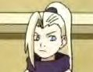

| Sakura is a girl who has a unique personality. She's the kind of person who tries hard and is very intelligent. But in the series, there is an inner side that's shown to the viewer/reader. Anyway, she has a crush on Sasuke and always tries to impress him. (She is competing with all the girls in the class for Sasuke though) In the beginning of the series, Kakashi thought that she only cared about love but she, herself, once realizes she is too infatuated with Sasuke and that she's neglecting her duties. She used to have long hair because she knew Sasuke liked long hair but she cut it off later. Also, in the beginning of the series, she hates Naruto. Her power comes mostly from intelligence. |
| Hatake Kakashi is a man full of techniques and moves. He's the sensei that teaches Naruto, Sakura and Sasuke. He can learn a jutsu just by seeing it and has memorized over a 1000 jutsus. And he knows devestating attacks. As the series goes on, he cares a lot about his three ninjas in training and gets heavily involved in the plot later on. He has a rival named Gai, and he's fought him over 100 times (50 wins and 49 losses). He also has the use of the Sharingan eye. |
 |
A chunnin level ninja who is very silent and has a bad past. Sasuke is very smart and a very skilled ninja, he's from the Uchiha Clan, meaning he's very skilled at ninjutsu and was raised to be very intelligent. He has the power of Sharingan, and that's the ability to perform other people's jutsus just by witnessing it. He's the top student at Ninja School and the the number one rookie Genin. All the girls in his class are in love with him and Naruto is jealous of his skills and always tries to beat him. Later on, Sasuke inherits forbidden Jutsu due to a curse that was placed on him. He later learns to hold back the curse thanks to the teaching of Kakashi. And the curse has a 9/10 possibility of death but his power cancelled the effects of it. |
| Uzamaki Naruto is a young orphan boy who is a ninja in training. He is a naive and energetic character. He likes to play jokes and have fun. He knows a great amount of Jutsus and can pull out great attacks when necessary. Naruto is the reincarnation of the nine tails demon fox, a creature who once destroyed Leaf village. And when put under pressure, he can summon special energy to coincide with his deadly demon fox side. He is the outcast in the village though. (Because he is the reincarnation of the demon fox who destroyed the village) He has a great link to Iruka, his teacher, and they are really great friends. He has a crush on Sakura and considers Sasuke his rival. (Sasuke hates him in the beginning) Naruto has an obsession with ramen and hates the 3 minutes he has to wait for it. He is trained by Kakashi and his dream is to be a strong Hokage. |
| A genin level ninja from Kurenai’s team 8. She is very powerful but lacks confidence. She entered the Chuunin Selection Exam to change herself. She was sick of running away from her problems. She uses the Hyuga Style Taijutsu (very powerful) in combination with the Byukugan technique. This makes her very powerful and very dangerous. With such techniques in her arsenal, just one touch from her can be a critical hit to a person's organs. She has an admiration for Naruto as in the series, whenever he talks to her, she starts to blush. She is a member of the upper house Hyuga Clan. |
| He and Naruto have a special relationship. They both were orphans and Iruka and Naruto have a very close friendship. He was around when the Demon Fox killed his parents. (He was around Naruto's age when that happened) Iruka teaches him the basics of ninjustsu and is a teacher at Ninja school. Iruka often underestimates Naruto but Naruto always surprises him when he succeeds. Iruka is now Konohamaru's teacher. |
| Rock Lee is a gifted fighter who is good at hand-to-hand combat. He trains a lot and proof of that is from his training worn hands. Rock Lee has a crush on Sakura and looks up to his teacher, Gai. In the series, you’ll see Rock Lee’s crush on Sakura is very large. But Sakura doesn’t feel that strongly for him. He is a genin level ninja that is incapable of using ninjutsu or gensutsu. His specialty is Taijutsu. When in battle, he’ll take off the heavy training weights from his legs. This allows him to move freely and more quickly. He is very fast once these are taken off. He also uses forbidden jutsu like the Extreme Lotus. It’s high speed Jutsu that cannot be seen or touched. It takes a toll on the body though as the user will feel extreme pain to the point where they find it hard to move. Rock Lee is a powerful ninja that has a strict training regime and is quite different because he doesn’t use ninjutsu or gensutsu. |
|  | Sakura’s rival and friend. She is infatuated with Sasuke and is competing with Sakura for him. Ino has a jutsu that allows her to take control of a person’s body for a few minutes. But when she takes control of another person’s body, her body will go inactive. Ino had anger towards Sakura since they were fighting for Sasuke for years. Ino pretends to hate Sakura and makes fun of her forehead but deep down, she really cares for Sakura. |
| Shikamaru is an pessimistic young man who always thinks about the downsides of things. But, he's also a very rational youngman who can reason and strategize better than most people can. His good sense and sharp intelligence save him from the deadliest of situations. A lot of people take him for a coward but his intellectual mind makes up for his strength. At first, he and Naruto hate each other but before the Chunnin Exam Tournament Finals, they become friends. His specialty is Shadow Copy Ninjutsu. |
| Neji is a member of the lower class of the Hyuga Clan. He’s the type of person who hates weak people and he thinks he’s the most powerful ninja on his team. He’s overconfident but he has reasons for that. Members of the Hyuga Clan called him a genius. He’s seen in the Chunnin Exam and makes it to the finals. He hates Hinata because she was in the upperclass of the Hyuga Clan. Neji is very powerful and like Hinata, he has the “soft touch” fighting style that can make critical hits on a person’s organs |
| Zazuba is a skilled ninja who is very powerful and well known. When he was young, to become a ninja, he had to kill students in his academy to pass the test. He is known as the demon in his town. In the series, when he’s first encountered, he was after an old man named Tazuna. Naruto, Sakura, Kakashi and Sasuke had to protect the old man from Zazuba and this lead to quite a battle. Zazuba is a very powerful Jounin level ninja who is feared by many people. He is the one who raised Haku. His weapon of choice is a large slicing item that takes a lot of strength to hold because it’s large. |
| When Gaara was born, his father sealed a sandbeast named Shukaku into him. When Gaara is awake, the beast has no control over him. But if he goes to sleep, Shukaku has full control over him. If Shukaku has full control over him, Shukaku will use Gaara’s body to kill people. This is why Gaara doesn’t get any sleep and is why he has the dark lines under his eyes. Gaara has several attacks that make him dangerous. He can control the sand and make deadly attacks like “Desert Graveyard”. It’s an attack where he’ll make the sand bury the victim and then use sand pressure to literally make the victim’s body explode. He also has an automatic defense. He dosen’t even control this defense. If somebody tries to throw an attack at him, sand will make walls around him. This makes it hard to ever hit Gaara. For awhile, Gaara had never had an injury in his entire life. The first to ever inflict pain on him was Rock Lee. Gaara makes his first appearance in the Chunnin Exam. |
| Itachi is the destroyer of the Uchiha Clan and is the one who slaughtered everybody in it, except his brother, Sasuke. Itachi left Sasuke alive for the sole purpose of seeking him out to kill him. This is why Sasuke hates his brother and his past so much. Since Itachi killed everybody in the Uchiha Clan, Sasuke has felt hatred for him. Itachi is a powerful fighter and can utilize the Sharingan eyes to it’s fullest power. Itachi appears later in the Naruto series to reek havoc on the Naruto senshi and especially Sasuke. |
| Orochimaru is one of the three legendary ninjas. He’s one of the biggest and baddest villains in the Naruto series. He is the founder of the Hidden Sound Village, a village that wants to dominate other villages. Orochimaru was incredibly powerful when he was a child and he currently knows a great amount of Justus. (Including a lot of Forbidden Jutsu) Orochimaru has gathered lots of Genin, Anbu and Chunnin ninjas to experiment on them. Why? He wants a forbidden Jutsu that will give him the “ultimate power”. Orochimaru looks younger than he really is thanks to another one of his techniques. He also can use Summoning No Jutsu to summon a large anaconda called Manda. Manda has venomous teeth and is a very large creature. Orochimaru’s first appearance in the series is during the Chunnin Exam. He sought out Sasuke because he wants power from an Uchiha Clan member to achieve his goals. Later in the series, he finds Naruto as a threat because of the powerful Nine Tails Demon Fox inside him. |